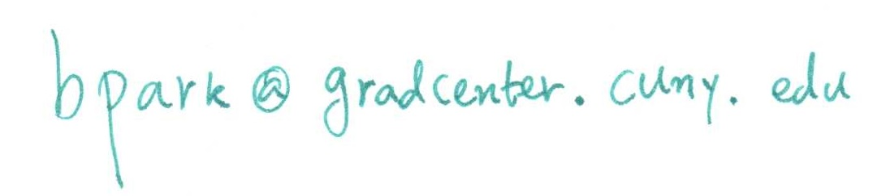

Trigonometry And College Algebra
MTH 13 Section E01 [45993], Spring 2017
Tuesdays and Thursdays 18:00 - 19:55, Room: Language 33
CUNY Bronx Community College
Instructor: Dr. Byungdo Park Email: 
Office Hours: By appointment.
Course Syllabus: PDF
Section Syllabus: PDF
Review sheets and Workbook: Click
Announcements
2017-05-26: Letter grades has been submitted. Have a wonderful summer!
2017-05-04: Solutions to the Exam I have been posted below.
2017-04-27: Final Exam will take place on May 25th (Thursday).
2017-04-27: Midterm Exam 3 will take place on May 4th (Thursday), in-class.
2017-03-24: Solutions to the Exam II have been posted below.
2017-03-15: Announcements on make-up classes: The Dean of Academic Affairs wrote that "all classes that were scheduled to meet on Tuesday March 14, 2017 will now meet on Friday May 19, 2017 (originally the College Reading Day)." For Thursday Feb. 9th snow storm cancellation, we are (and already have been) going 5-minute over time in each class meeting until the end of semester.
2017-03-14: The BCC will be closed on Tuesday Mar. 14th due to snow storm. Obviously we do not meet today. Make-up schedule will be announced later. The quiz scheduled for Thursday March 16th will be given on Tuesday March 21st, and the Midterm Exam 2 will be given on Thursday March 23rd.
2017-03-11: Midterm Exam 2 will take place on March 21st (Tuesday), in-class.
2017-02-25: Solutions to the Exam I have been posted below.
2017-02-21: Since Section 12.6 was not fully covered on Feb. 16th, we postpone and reschedule our Midterm Exam 1 --- February 23rd (Thursday), in-class.
2017-02-12: Solutions to Exam 1 Review Sheet has been posted below.
2017-02-16: I have to travel to another university today. Professor Jason Kim will substitute me for today. He will cover Section 12.6 about multiplicative operations in exponential and polar forms as well as the de Moivre's theorem. He will give Quiz 2, and if there is time, he will go over the Exam 1 review sheet.
2017-02-12: Midterm Exam 1 will take place on February 21st (Tuesday), in-class.
2017-02-09: The BCC will be closed on Thursday Feb. 9th due to snow storm. Obviously we do not meet today. Make-up schedule will be announced later. The quiz scheduled today will be given on Tuesday February the 14th, and on Thursday Feb. 16th, there will be another quiz covering the material we did on last Tuesday Feb. 7th.
2017-01-31: Here is a PDF of MTH13 Entrance Questionaire.
2017-01-30: Welcome!
Quizzes
Quiz #1 PDF Date: Feb. 14th (Rescheduled from Feb. 9th) Solution
Quiz #2 PDF Date: Feb. 16th Solution
Quiz #3 PDF Date: Mar. 9th Solution
Quiz #4 PDF Date: Mar. 21st (Rescheduled from Mar. 16th) Solution
Quiz #5 PDF Date: Apr. 6th Solution
Quiz #6 PDF Date: Apr. 27th Solution
Exam Schedules
Exam 1: February 23rd (Thursday), 18:00-19:55 in the same class room. (Rescheduled from Feb. 21st)
- Sections 9.1, 9.2, 9.3, 9.4, 12.1, 12.2, 12.3, 12.4, 12.5, and 12.6 will be covered.
- You are allowed to use your scientific calculator.
- You can use your formula sheet (1 page in letter-sized paper) upon an approval of the instructor and the formula sheet must be handed-in with your exam. Note that a formula sheet may contain formulas but not solutions to mathematical problems.
- Style, difficulties, format of the exam will be very similar to the Review Problems, Solutions.
Here are Problems and Solutions.
The average was 60.33 and the maximum score achieved by a student was 83.
Exam 2: March 23rd (Thursday), 18:00-19:55 in the same class room. (Rescheduled from Mar. 21st)
- Sections 3.1, 3.2, 3.4, 13.1, 13.2, 13.3, 13.4, 13.5, and 13.6 will be covered.
- You are allowed to use your scientific calculator.
- You can use your formula sheet (1 page in letter-sized paper) upon an approval of the instructor and the formula sheet must be handed-in with your exam. Note that a formula sheet may contain formulas but not solutions to mathematical problems.
- Style, difficulties, format of the exam will be very similar to the Review Problems, Solutions.
Here are Problems and Solutions.
The average was 82.75 and the maximum score was 100.
Exam 3: May 4th (Thursday), 18:00-19:55 in the same class room.
- Sections 10.1, 10.2, 10.3, 10.4, 10.5, 20.1, 20.2, 20.3, 20.4, 20.5, and 20.6 will be covered.
- You are allowed to use your scientific calculator.
- You can use your formula sheet (1 page in letter-sized paper) upon an approval of the instructor and the formula sheet must be handed-in with your exam. Note that a formula sheet may contain formulas but not solutions to mathematical problems.
- Style, difficulties, format of the exam will be very similar to the Review Problems, Solutions.
Here are Problems and Solutions.
The average was 72.71 and the maximum score was 79.
Final Exam: May 25th (Thursday), 18:00-19:55 in the same class room.
- The entire course material on the syllabus will be covered
- You are allowed to use your scientific calculator.
- You can use your formula sheet (1 page in letter-sized paper) upon an approval of the instructor and the formula sheet must be handed-in with your exam. Note that a formula sheet may contain formulas but not solutions to mathematical problems.
- Style, difficulties, format of the exam will be very similar to the Review Problems, Solutions.
Here are Problems and Solutions.
The average was 84 and the maximum score was 99.
Advertisements
There is a CUNY Math contest open for all matriculated CUNY undergraduate students. If you are interested in problem solving, please see this page.
BCC/City College Meet & Greet Event will take place on February 16th, from 12pm ?2pm in RBSC Rm. 211A which is an opportunity to meet faculty, staff and City College students with information about its programs, scholarships, service, and admissions process. Please see this PDF for more details.
Tutoring information
If you need an assistance from departmental tutoring, please visit this page.
Links
Webpage of Byungdo Park
Bronx Community College Math Department Homepage